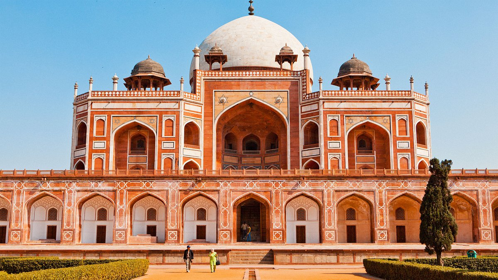
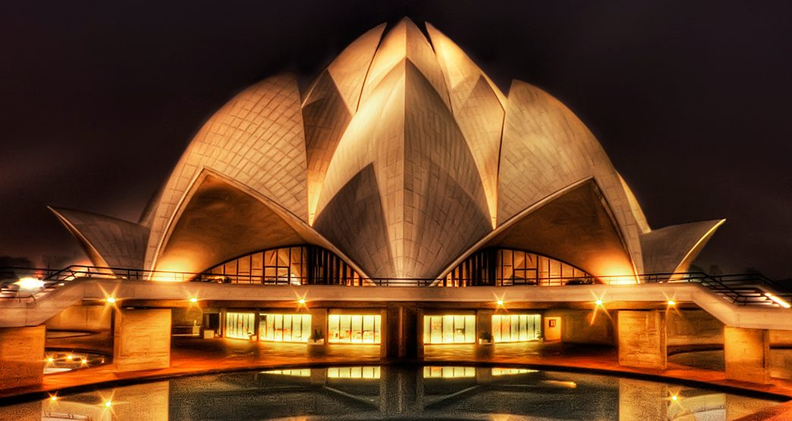

Best Things To Do In Delhi, India (With Insider Tips!)
Last updated: January 25, 2025
Delhi, the heart of India, is a city that beautifully blends history, culture, and modernity. As the capital of India, it is home to a treasure trove of architectural marvels, bustling markets, and mouthwatering cuisine. Whether you are a history enthusiast, a foodie, or just someone looking to soak in the vibrant culture, Delhi has something for everyone. Let’s explore some of the top attractions that make Delhi an unforgettable destination!
Top 5 Places To Visit In Delhi In 2025:
1. The Red Fort

The Red Fort, a UNESCO World Heritage Site, stands as a symbol of India’s rich history and independence. Built by Mughal Emperor Shah Jahan in 1648, its red sandstone walls house stunning palaces, gardens, and museums. Don’t miss the evening light and sound show that narrates the history of the fort!
Tickets cost INR 50 for Indian nationals and INR 600 for foreign tourists. The fort is open from 9:30 AM to 4:30 PM every day except Monday.
2. Lotus Temple
The Lotus Temple is a breathtaking Baháʼí House of Worship known for its unique lotus-like design. This architectural wonder is a haven of peace and serenity where people from all religions can meditate and reflect.
Entry is free, and the temple is open from 9:00 AM to 5:30 PM. The best time to visit is during the evening to see the temple beautifully illuminated.
3. Qutub Minar

Qutub Minar is one of Delhi’s most iconic landmarks and the world’s tallest brick minaret. This magnificent structure, built in 1193 by Qutab-ud-din Aibak, is surrounded by several other historical monuments, making it a must-visit for history buffs.
Entry fees are INR 30 for Indian nationals and INR 500 for foreign visitors. The site is open daily from sunrise to sunset.
4. India Gate

India Gate is a grand war memorial dedicated to Indian soldiers who died during World War I. Located in the heart of the city, it is surrounded by lush gardens and offers a peaceful ambiance. The area comes alive in the evening with colorful lights and street vendors.
Visiting India Gate is free and it is accessible 24/7. Early mornings or late evenings are the best times to experience its beauty.
5. Chandni Chowk

Chandni Chowk is one of Delhi’s oldest and busiest markets, famous for its chaotic charm, vibrant shops, and delicious street food. From textiles to jewelry to electronics, you’ll find it all here. Don’t forget to try the iconic paranthas and jalebis!
Entry to Chandni Chowk is free. The market is open every day except Sundays. Best visited during the morning or late evening to avoid crowds.
Local Tips:
Indulge in authentic North Indian cuisine at Karim’s near Jama Masjid, a legendary eatery loved by locals and tourists alike.
Use the Delhi Metro for quick and affordable travel around the city. It’s clean, efficient, and well-connected to major attractions.
Visit markets like Dilli Haat for souvenirs and handicrafts. Bargaining is common, so don’t hesitate to negotiate for the best price.